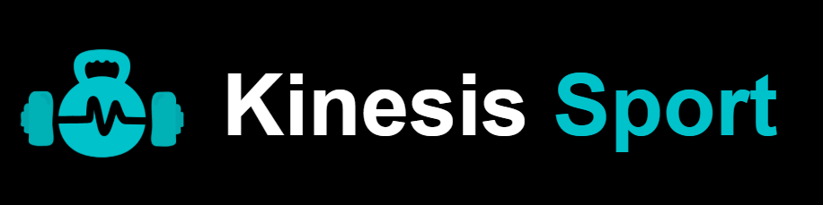

Kinesis Sport
2025 · 1er proyecto · Sin frameworks

Descripción
Sitio web completo para un centro de entrenamiento personal ficticio llamado Kinesis Sport. Desarrollado durante el primer curso como ejercicio práctico de maquetación web, sin usar frameworks ni librerías de CSS. Incluye varias páginas interconectadas con diseño responsive y menú hamburguesa funcional.
Páginas y funcionalidades
El sitio cuenta con página de inicio con hero, servicios y formulario de contacto, página de entrenamiento con tarjetas de modalidades, página de recuperación con contenido detallado, sección "Sobre mí" del entrenador, página de contacto con mapa y datos del local, menú hamburguesa responsive sin JavaScript usando solo CSS, y footer completo con iconos de redes sociales.
Retos y aprendizajes
Primer contacto con la estructura semántica de HTML5 y el diseño responsive con media queries. Implementé layouts complejos con Flexbox y aprendí a organizar un proyecto con múltiples páginas y archivos CSS compartidos. El reto más interesante fue construir el menú móvil sin JavaScript, usando únicamente el truco del checkbox en CSS puro.
⚠️ El formulario de contacto usa PHP y no está activo en la demo estática. Funciona correctamente en un entorno con servidor.